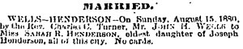

|
Sarah
Rebecca Henderson was the first daughter of Captain Joseph Henderson.
She married John Herbert Wells, had no children, and lived
to be 69 years old. |
||
|
Important
Facts
|
||

| May 12, 1850 | Born in New York City on May 12, 1850, Sarah R. Henderson was the first of six children of Captain Joseph Henderson and Angelina Annetta Weaver. Source: 1900 U.S. Census for Brooklyn, New York, Kings County, Series: T623 Roll: 1058 Page: 109. | |
| October 15, 1850 | The 1850 U.S. Federal Census lists Sarah R. Henderson as living in New York Ward 4 with her parents Joseph and Angelina Henderson. Source: 1950 US Federal Census, New York City Ward 4, New York, NY. Roll 536 Book 1, Page 278b. | |
| June 14, 1855 | The New York State Census lists Joseph (28), Angelina A (22), Sarah R (5), Morris (4), Joseph (2) and Elizabeth Mcgrath (14) living in Ward 7, Brooklyn City, Kings, New York. Source: New York, State Census, 1855, index and images, FamilySearch: accessed 04 Oct 2013. | |
| July 12, 1860 | At age 10, Sarah is listed in the 1860 US Federal Census for New York. The census lists J. Henderson (32), Ann (29), Sarah (10), Maurice (8), and Joseph (6) as living in the 9th Ward Brooklyn city, county of Kings. Source: 1860 US Census for 9th Ward Brooklyn City, County of Kings. | |
| July 26, 1870 | The 1870 US Federal Census lists Joseph (46), Angelina (38), Sarah R. (20), Maurice D. (18), Joseph Jr. (16), Mary Ann (10), Angelina A. (8), and Alexander D. (6). Source: 1870 US Census, 21-WD Brooklyn, Kings County, New York, Series: M593, Roll: 961, Part: 1, Page: 349A. | |
| June 3, 1880 | John Wells (single) is listed as a boarder living in Brooklyn, New York. Both parents were listed as being born in New York. Source: 1880; Census, Kings (Brooklyn), New York City-Greater, New York; Roll: T9_845; Family History Film: 1254845; Page: 133.4000; Enumeration District: 81; Image: 0405. | |
| June 4, 1880 | The 1880 U.S. Census lists Joseph (52) and Angelina (48) living at home with their three daughters, Sarah R. (30), Mary A. (20), Angelina A. (18), and three sons, Maurice (28), Joseph (26), and Alexander (15). Source: 1880 US Federal Census for 983 Myrtle Ave., Kings (Brooklyn), New York City-Greater, New York. | |
| August 15, 1880 | On Sunday, The Rev. Charles C. Turner married Mr. John Herbert Wells and Sarah R. Henderson in Brooklyn, New York. The marriage announcement mentioned that she was the eldest daughter of Joseph Henderson. Source: New York City Brides Record Index Results: Certificate Number 2138; New York, Marriage Newspaper Extracts, 1801-1880. The Brooklyn Daily Eagle for August 16, 1880, page 3. |  Marriage Announcement |
| John H. Wells is listed in the New York City Directory as: bookkeeper at 41 Moffat. Source: Ancestry.com. Brooklyn, New York Directories, 1888-1890. | ||
| October 7, 1890 |
Her father, Captain Joseph Henderson, died at 633 Willoughby Avenue, Brooklyn, New York and was buried in the Green-Wood Cemetery in Brooklyn, New York. Lot 13244, Section 88. Source: Brooklyn Municipal Archives (Death Certificate No. 15592). |  Brooklyn Map Click on Map |
Feb 16, 1892 |
John H. Wells (47) Salesman, and Sarah R. Wells (41) were listed as living in Ward 25, Brooklyn, New York. Source: New York State Census, 1892. | |
June 22, 1900 |
The 1900 U.S. Census lists John H. Wells (54, salesman) and wife, Sarah R. (50) living on 200 Hart St. in Brooklyn Ward 21, Kings, New York. They had no children. Source: 1900 U.S. Census for Brooklyn, New York, Kings County, Series: T623 Roll: 1058 Page: 109. | |
| June 1, 1905 | The 1905 New York State Census lists Sarah R Wells (55), Angelinia A. Henderson (72), and John H. Wells (58). John Wells is listed as a Wholesale Grocery Salesman. They are listed as living at 149 Van Buren Street, Brooklyn, New York. Source: New York State Census, 1905, database with images, FamilySearch. | |
June 1, 1909 |
Her mother, Angelina died at 429 Willoughby Ave., Brooklyn, New York in the residence of her Mary Ann Hendrickson. Source: New York Death certificate No. 10534. | Sarah's Signature (1909) |
| June 8, 1909 | Sarah gave her consent that the last Will and Testament of her mother, Angelina A. Henderson, be admitted to probate. Source: Petition, Citation, Proofs of Will, Kings County Surrogate's Court, June 11, 1909. | |
Aug. 4, 1909 |
Sarah's husband, John Herbert Wells died suddenly at his residence, 283 Hart St., in Kings County, New York. Funeral services were on Friday, August 6th at 8:15 PM. Cleveland, Ohio papers were asked to copy the newspaper notice. Source: Death Certificate No. 14733 at NY Death Index and Aug 5, 1909 Brooklyn NY Daily Eagle newspaper. |
|
April 23, 1910 |
The 1910 Census lists Sarah R. Wells (age 59 - widow) as a lodger in a home on 283 Hart St. in Brooklyn. Source: 1910 US Census, 21-Wd Brooklyn, Kings, New York, T624, Roll 969, Page 95B | |
October 8, 1915 |
Sarah published her last Will and Testament in Brooklyn, New York. In the Will she left the remainder of her estate to her brother Alexander Dawson Henderson. She signed as Sarah Rebecca Wells 1016 Green Avenue, Brooklyn, N.Y. Source: Brooklyn Surrogate's Court, L, 517, P. 84. | |
August 17, 1919 |
Sarah died in Brooklyn New York. Source: The Green-Wood Cemetery Catalog of Heirs 2993. | |
August 19, 1919 |
Listed as "Wells, Sarah R. (Henderson) 72." Source: Obits: 1913-1919: R-Z Index for the Asbury Park Evening Press; Monmouth Co, NJ. |
|
August 20, 1919 |
The Brooklyn Daily Standard Union wrote "Sarah R. WELLS, widow of John H. WELLS and daughter of the late Capt. Joseph HENDERSON, died Sunday at her home, 953 Greene Avenue (Brooklyn). She had lived in Brooklyn practically all her life. Funeral services were held this afternoon at her late home. Interment at Greenwood Cemetery." Source: August 20, 1919, Brooklyn Daily Standard Union. | |
August 20, 1919 |
Her interment is at the Green-Wood cemetery; Lot 13244 in section 88 at the Henderson family plot. Source: Green-Wood burial database. | |
July 19, 1920 |
Sarah R. Wells's Last Will and Testament, went to probate and satisfactory proof was made as to the proceeding. Source: Brooklyn Surrogate's Court, L, 517, P. 84. | |
1931-32 |
In the St. Matthew Church bulletin a memorial section listed that a table was given in memory of Angelina A. Henderson by her daughter, Sarah R. Wells. Source: Church bulletin from the Church of St. Luke and St. Matthew. |

Last update: Thursday, February 26, 2026